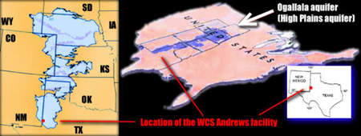

Texas Radiation Online - Waste Types Explained

The Ogallala is known as the Southern High Plains Aquifer to Geologists
The Presence of the Ogallala/ High Plains Aquifer: Site Unsuitable
In 1993, as part of its application for a RCRA Class-C hazardous waste disposal license, an extensive study by Terra Dynamics
was submitted to the TNRCC (now TCEQ) for the WCS site. This study performed core sampling to create a underground picture of what lies under the site,
for which it reported in detailed cross-sections both the existence of the Ogallala, and the thickness of the formation. The
report states for each core sample that the Ogallala is just below the topsoil
with conclusive evidence. Later, WCS produced its own site report
to the TDH Bureau of Radiation Control, for which an extensive land survey was not conducted. Without presenting scientific data to
refute the claims of other thorough studies, WCS declared that all other studies, including
the Terra Dynamics study, misidentified the Ogallala formation, and that it was, they claimed, Antler Sandstone. Antler sandstone is
indigenous to the Antlers aquifer which is barely in east Texas and resides in southern Oklahoma.
It does not extend into west Texas, and is over 300 miles away.
At the link below, I have compiled some of the more outstanding excerpts from this 1993 study
with some of the other pertenant material found here on the Ogallala at WCS's site.
This is a 21 MB PDF file, so I advise against downloading from a slow internet connection Site Specific Hydrology at WCS's Andrews County site
Andrews County has been rejected in the past for a disposal facility by other state agencies over the presence of the Ogallala.
Although the Terra Dynamics study remains on file at the Bureau of Radiation Control, the Bureau never questioned WCS's claims
in this matter, and did not do their own Environmental Assessment. The Bureau never bothered to check the facts, and failed
to regulate proper siting criteria. We charge WCS with submitting false information, that the site is geologically unsuitable,
and charge the TDH Bureau of Radiation Control with failing to enforce or investigate siting criteria, which demonstrates a failure
to do its job to regulate.
Here are other sources indicating the presence of the Ogallala at the WCS site:
Maps from the Texas Water Development Board - http://www.twdb.state.tx.us/mapping/index.htm
Texas Low Level Radioactive Waste Disposal
Authority's previous rejection of Andrews
for use as a low-level nuclear waste disposal facility.
Includes a July 22, 1987 review of geology and hydrology in Andrews County,
Texas by the Bureau of
Economic Geology at UT Austin. TLLRWDA's magazine 'Rad Waste Review' reported in March 1988 that
when the Ogallala aquifer was found 40 feet below a test drilling in central Andrews Co,
the county was immediately disqualified.
Jan 1999, UT Bureau of Economic Geology for TLLRWDA.
Considered the suitability of sites in Andrews Co owned by Envirocare and WCS for dumping
low-level radioactive waste, as per state licensing requirements.
This is a photo of a geologist pointing out a
major recharge feature at the Andrews site (in the huge onsite "pit")
known as a 'sand worm' or 'sand tube'. This is where percolating, flowing waters
have removed the organic matter from the clay over millions of years, leaving behind sand in a
tube form connecting the aquifers beneath to the surface water collection
forms known as playa lakes. There are 19,500 playa lakes
in the southern high plains of Texas that feed the enormous Ogallala aquifer
as well as the numerous minor aquifers.
- Monument Draw, which is less than 8 miles from the WCS site,
feeds into the Colorado river. For some this raises other concerns about water contamination
downstream to communities including Austin along the way to the Gulf of Mexico.
Maps from http://water.usgs.gov:
{kind=link}
{kind=link}
{kind=link}
{kind=link}
{kind=link}
{kind=link}
{kind=link}
{kind=link}
{kind=link}
{kind=link}
{kind=link}
{kind=link}
{kind=link}
{kind=link}
{kind=link}
{kind=link}
{kind=link}
{kind=link}
{kind=link}
{kind=link}
{kind=link}
{kind=link}
{kind=link}
{kind=link}
{kind=link}
{kind=link}
{kind=link}
{kind=link}
{kind=link}
{kind=link}
{kind=link}